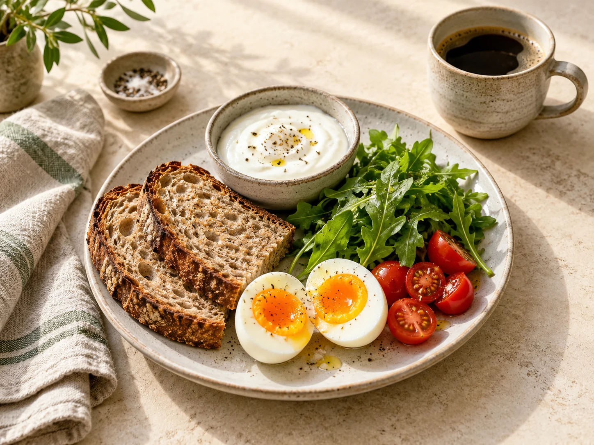

先看生熟
干燕麦的 100 g 与煮成燕麦粥的 100 g 不同；鸡胸肉和米饭的示例采用熟重。选对条目再称量。
FOOD / DRINKS / EVERYDAY COOKING
从常用食材到一杯拿铁，看看热量、蛋白质、脂肪和碳水化合物，再组合成自己愿意一直做的饭。

01 / FOOD LIBRARY
120 项基础食物来自 USDA FoodData Central 的 SR Legacy（2018）通用记录，另有 2 项本站明确配方的饮料估算，不代表国内某个品牌。按 100 g 可食部、示例份量或卡片中的自定义克数换算；饮料也按克称量，避免把克与毫升直接等同。面包分为全麦、白面包、黑麦、法式、贝果等具体通用条目；品牌和配方差异较大，包装标签优先。生熟状态、用油和配方都会改变结果。
正在加载食材…
配图优先使用你提供截图中的实物小图，原截图仅用于配图，不作为营养数据来源；部分同类食材示意与具体品种、做法可能不同。每张卡片可展开英文条目和 FDC 编号核对来源；数值为食物数据库估算，购买的包装食品优先记录包装营养标签。
02 / SIMPLE RECIPES
以下是按明确配方相加的示例，尚未标作你的实际做饭记录。整份配方总量固定，改变分餐份数可查看每份营养；调味料、额外用油、糖浆和实际损耗需要另计。成品加水、蒸发会改变每 100 g 的浓度，所以这里按配方份数展示。
干燕麦的 100 g 与煮成燕麦粥的 100 g 不同；鸡胸肉和米饭的示例采用熟重。选对条目再称量。
煎锅里的油、沙拉酱、奶咖的奶和糖浆都属于配方。少量高能量食材也值得称一次。
记下火候、调味、口感，以及“下次多一点什么”。营养表与喜欢吃这件事可以同时存在。